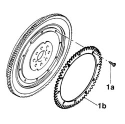

1024B60 PHONIC WHEEL ON ENGINE FLYWHEEL FOR RPM AND TIMING SENSOR - REPLACE WITH FLYWHEEL REMOVED
- Path
- Procedures > 10 ENGINE > 1024 CRANKSHAFT AND FLYWHEEL > 1024B ENGINE FLYWHEEL > 1024B60 PHONIC WHEEL ON ENGINE FLYWHEEL FOR RPM AND TIMING SENSOR - REPLACE WITH FLYWHEEL REMOVED
- Kind
- repair procedure (removal / refitting; the operation number is the code)
- Applies to
- engines: 3.0 V6, 3.2 V6; all production periods
- Interactive page
- https://sloeber94.github.io/elrnDB-lThss/en/#/210220
Applies to: engines: 3.0 V6, 3.2 V6; all production periods
 Removing
Removing
 Refitting
Refitting1. Undo the bolts (1a) and remove the phonic wheel for the rpm and timing sensor (1b).

Applies to: engines: 3.0 V6, 3.2 V6; all production periods
Refitting
Removing- Fit the phonic wheel and secure it by tightening the fixing bolts
Applies to: engines: 3.2 V6; all production periods
Removing
Refitting1. Undo the bolts (1a) and remove the phonic wheel for the rpm and timing sensor (1b) from the flywheel.
Applies to: engines: 3.2 V6; all production periods
Refitting
Removing- Place the flywheel for the rpm and timing sensor back in its housing and secure it to the flywheel tightening the bolts to the recommended torque.